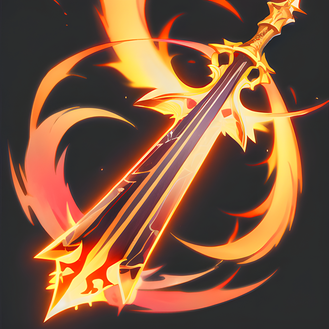
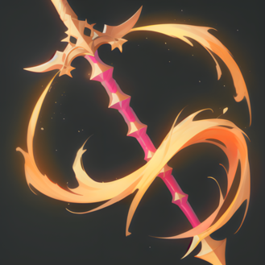
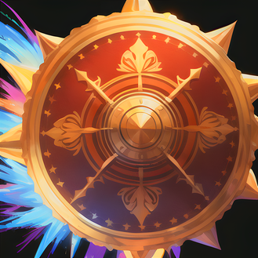
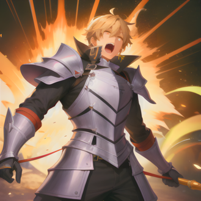
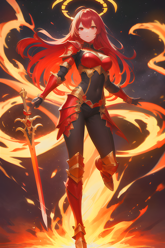

Les Chevaliers
Les Chevaliers

Dans l'univers d'Eternia, les Chevaliers sont des combattants qui ont été formés depuis leur plus jeune âge dans les arts du combat, afin de protéger leur royaume contre les ennemis qui menacent sa sécurité. La plupart des Chevaliers ont été éduqués dans des académies militaires prestigieuses, où ils ont appris à manier toutes sortes d'armes, du simple bâton aux épées et aux lances les plus sophistiqués.
Les Chevaliers d'Eternia sont des combattants agiles et rapides, capables de se déplacer rapidement sur le champ de bataille pour prendre l'avantage sur leurs ennemis. Ils possèdent une grande force physique qui leur permet de porter des coups puissants en corps-à-corps.
Les Chevaliers sont des personnages résistants et endurants, capables de tenir le coup face à des ennemis plus puissants qu'eux. Ils peuvent absorber une grande quantité de dégâts avant d'être mis hors de combat, grâce à leur armure lourde et à leur entraînement rigoureux.
Les Chevaliers d'Eternia sont des combattants complets, capables de se battre dans toutes les situations grâce à leur maîtrise de différentes armes et à leur grande résistance. Ils sont des alliés précieux sur le champ de bataille et constituent une force redoutable pour leurs ennemis.
Spécificité de la classe : 5% de force supplémentaire

L'attaque du Coup d'épée est une technique ancestrale de combat au corps-à-corps, utilisée depuis des siècles par les guerriers les plus aguerris. Elle trouve son origine dans les batailles médiévales, où les chevaliers avaient pour habitude de charger à cheval en brandissant leur épée pour terrasser leurs ennemis.
Le Coup d'épée consiste à se jeter en avant avec une grande impulsion, en frappant de toutes ses forces avec la lame de l'épée. Cette technique de combat requiert une grande force physique, ainsi qu'une grande maîtrise de l'épée pour être efficace. Elle est redoutablement efficace pour briser la défense de l'ennemi, pouvant trancher à travers des boucliers, armures et même des os.
Lorsqu'un guerrier exécute un Coup d'épée, le son métallique de l'épée fend l'air, créant une onde de choc qui peut être ressentie par ses ennemis. Au moment de l'impact, l'épée pénètre la chair de l'adversaire avec une force considérable, faisant jaillir le sang et infligeant de lourds dégâts. Cette technique est très efficace pour briser la défense de l'ennemi et mettre un terme rapide à un combat.
Puissance : 50 | Recharge : 2 tours

La Lance de guerre est une attaque redoutable utilisée par les guerriers depuis des temps immémoriaux. Cette technique est particulièrement redoutable lors des batailles à grande échelle, où les soldats doivent affronter des ennemis en nombre. Elle tire son nom de la lance, une arme longue et fine utilisée pour transpercer les ennemis à distance.
Lorsqu'un guerrier exécute une Lance de guerre, il saisit sa lance de guerre à deux mains et la balance avec fureur, abattant l'arme sur son ennemi avec une violence brutale. Le son métallique de la lance qui fend l'air est assourdissant, créant une onde de choc qui peut ébranler les ennemis à proximité. L'impact est si puissant que l'ennemi est projeté en arrière, déséquilibré et vulnérable.
En plus des dégâts infligés, la Lance de guerre a un effet secondaire très utile : elle perturbe l'équilibre de l'ennemi, le rendant plus vulnérable aux attaques suivantes. Cet effet est très efficace pour permettre au guerrier d'attaquer à nouveau en toute sécurité sans crainte de contre-attaque.
Puissance : 70 | Recharge : 3 tours | Effet : -25% équilibre ennemi (2 tours)

La Frappe de bouclier est une technique de combat qui nécessite un entraînement rigoureux et une grande maîtrise du bouclier. Les guerriers qui la maîtrisent sont craints pour leur capacité à infliger des dégâts considérables à leurs ennemis tout en les déséquilibrant et en les mettant en difficulté.
Lorsque le guerrier charge avec son bouclier en avant pour exécuter une Frappe de bouclier, il doit être rapide et précis pour toucher sa cible. Le bouclier est souvent équipé de pointes ou de lames pour augmenter les dégâts infligés et rendre l'attaque encore plus dévastatrice.
Le son du bouclier qui frappe l'armure ennemie est assourdissant, résonnant dans tout le champ de bataille. L'impact de la Frappe de bouclier est si puissant qu'il peut projeter l'ennemi en arrière et le laisser luttant pour retrouver son équilibre. Cette technique est donc particulièrement utile pour briser les lignes ennemies et permettre aux troupes alliées de passer à l'offensive.
En plus des dégâts infligés, la Frappe de bouclier a un effet secondaire très utile : elle perturbe l'équilibre de l'ennemi, le rendant plus vulnérable aux attaques suivantes. Cet effet est très efficace pour permettre au guerrier d'attaquer à nouveau en toute sécurité sans crainte de contre-attaque.
Puissance : 60 | Recharge : 3 tours | Effet : -30% équilibre ennemi (2 tours)

Le Cri de guerre est une technique de combat ancestrale utilisée par les guerriers les plus courageux et les plus intrépides. Elle est redoutée pour son effet psychologique sur l'ennemi, qui se sent terrifié et impuissant face à l'aura de puissance qui entoure le guerrier qui l'utilise.
Lorsque le guerrier pousse un rugissement assourdissant pour exécuter un Cri de guerre, il inspire la peur chez ses ennemis et galvanise ses alliés. Son cri est si puissant qu'il peut faire trembler les murs et les sols, témoignant de la force incroyable qu'il libère.
Le Cri de guerre augmente considérablement la force et la défense du guerrier, lui permettant de résister à des attaques ennemies et de porter des coups dévastateurs. Sa force physique est décuplée, lui permettant d'attaquer avec une férocité sans pareille et de repousser les ennemis avec une facilité surprenante. Sa défense est également renforcée, ce qui lui permet de mieux encaisser les coups ennemis et de résister aux effets néfastes des attaques spéciales.
L'effet du Cri de guerre dure trois tours complets, permettant au guerrier de maintenir sa puissance pendant un temps suffisamment long pour mener ses troupes à la victoire. Cette technique est souvent utilisée en début de combat pour donner un avantage psychologique à son armée et inspirer la confiance chez ses alliés.
Effets : +50% force et défense (3 tours) | Recharge : 4 tours

La technique de la Rage est l'une des plus impressionnantes du répertoire du guerrier. Elle demande une grande maîtrise de soi et une connaissance approfondie de son propre corps, mais elle permet au combattant de déployer une puissance incroyable sur le champ de bataille.
Lorsque le guerrier entre en état de Rage, son corps tout entier se remplit d'une énergie brute et puissante. Il peut alors frapper avec une force inouïe, capable de briser les os et de pulvériser les armures ennemies. Sa résistance est également décuplée, lui permettant de tenir plus longtemps sur le champ de bataille et de continuer à frapper avec la même intensité.
De plus, la Rage offre également au guerrier la possibilité de se soigner pendant qu'il combat. C'est un avantage considérable, car les blessures peuvent souvent réduire la capacité d'un combattant à se battre efficacement. Grâce à la Rage, le guerrier est capable de récupérer de l'énergie vitale en continu pendant qu'il se bat, ce qui lui permet de tenir plus longtemps sur le champ de bataille.
Les ennemis qui se dressent devant le guerrier en état de Rage savent qu'ils ont affaire à un combattant redoutable, craint pour sa puissance brute et son endurance exceptionnelle. Cette technique est donc souvent utilisée pour faire basculer le cours d'une bataille en faveur du guerrier et de son camp.
Le temps pendant lequel le guerrier peut maintenir son état de Rage est limité, mais pendant ce temps, il est capable d'infliger des dégâts considérables à ses ennemis. La Rage est donc une technique très utile pour infliger des coups décisifs à l'ennemi et pour donner un avantage à son camp.
Effets : +50% force & soin de 35 PV (3 tours) | Recharge : 5 tours